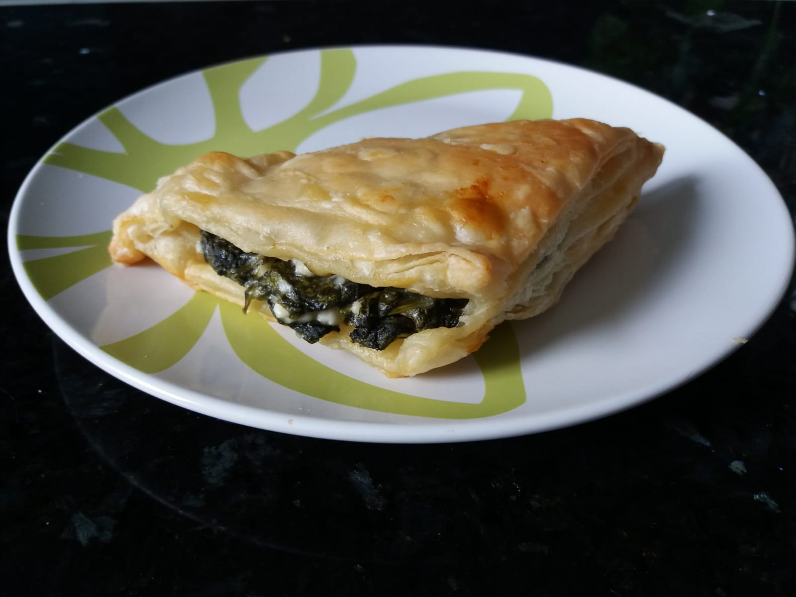

albanese byrek met spinazie
In Albanië eten de locals Byrek als ontbijt! In Tirana vind je dan ook vele Byrek kraampjes waarbij de vulling onderling verschilt van spinazie, kaas, witte bonen en vlees. Ook heerlijk als snack! In andere landen heet deze lekkernij Burek of Börek.

Bereidingsduur: 60 minuten
Aantal personen: 8
Ingrediënten:
150 gram spinazie
1 pak bladerdeeg
175 gram fetakaas
1 eetlepel olijfolie
naar smaak peper en zout
150 gram spinazie
1 pak bladerdeeg
175 gram fetakaas
1 eetlepel olijfolie
naar smaak peper en zout
Instructies:
1. Verwarm de oven voor op 200 graden. Ondertussen verwarm je een klein bodempje water in een pan en kook je in etappes de spinazie een paar minuutjes. Laat de spinazie uitlekken en snijd in kleinere stukken.
2. Kruimel de fetakaas en meng dit met de spinazie. Voeg naar smaak zout en peper toe.
3. Vet 8 plakjes bladerdeeg in met wat olijfolie en leg dit op bakpapier. Doe er een schepje van het spinaziemengsel in en klap het flapje dicht.
4. Doe de spinazieflapjes in de oven en controleer ieder kwartier of ze al een beetje bruin worden en draai ze om. Na ongeveer 45 minuten zijn ze klaar!
1. Verwarm de oven voor op 200 graden. Ondertussen verwarm je een klein bodempje water in een pan en kook je in etappes de spinazie een paar minuutjes. Laat de spinazie uitlekken en snijd in kleinere stukken.
2. Kruimel de fetakaas en meng dit met de spinazie. Voeg naar smaak zout en peper toe.
3. Vet 8 plakjes bladerdeeg in met wat olijfolie en leg dit op bakpapier. Doe er een schepje van het spinaziemengsel in en klap het flapje dicht.
4. Doe de spinazieflapjes in de oven en controleer ieder kwartier of ze al een beetje bruin worden en draai ze om. Na ongeveer 45 minuten zijn ze klaar!